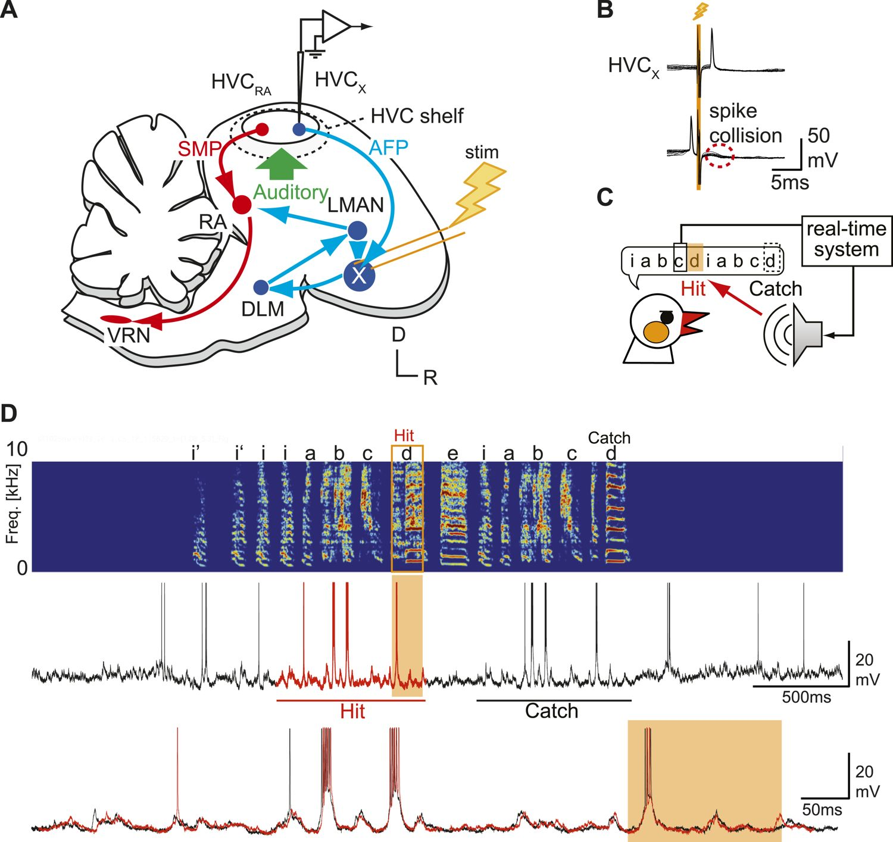

Learned song, auditory perception and the circuitry of vocal practice. Includes 887 syllables, measured MRI anatomy and an illustrated intracellular-recording study.
Social click sequences, vocal-clan research and field acoustics. Includes five original supplementary recordings, a published coda figure and a reproducible annotation summary.
Collections are listed by the evidence available here. A recording collection does not imply that a brain atlas or neural dataset is available for that species.
Taeniopygia guttata in the source studies · Vocal learning, perception and song circuits.
Song learning in zebra finches
Zebra finches are social songbirds. In the studies collected here, males learn a courtship song by hearing a tutor and practicing their own vocalizations. Researchers can follow that learning process while recording or manipulating activity in identified brain regions.
The source studies use the name Taeniopygia guttata. We retain the authors’ species terminology with their datasets; the photograph shows a captive zebra finch and is not an experimental subject from these studies.
Measuring perception with sound choices
Song similarity is often measured with an acoustic algorithm. Zandberg and colleagues instead also measured the birds’ own choices between sounds. The archive contains 887 short syllables prepared for that research, rather than continuous field recordings.
HVC and RA participate in the song motor pathway. A second pathway through the basal ganglia, including Area X and LMAN, contributes to learning and vocal variability. Experiments measure the roles of these pathways using recordings, behavioral tasks and targeted perturbations.
Garst-Orozco and colleagues measured developmental changes in inputs to RA and tested a network model of vocal variability. Hamaguchi and colleagues recorded HVC neurons during singing to investigate auditory input. These experiments ask different questions from an anatomical atlas.
Three sections from the Poirier MRI atlas. The displayed grid has 0.08 mm spacing; the original acquisition was anisotropic. This is one adult male reference specimen.
Physeter macrocephalus · Social codas, field acoustics and comparative communication.
Gabriel Barathieu, Wikimedia Commons, CC BY-SA 2.0. Photograph off Mauritius; not a documented subject from the Caribbean studies.
More than one kind of click
Sperm whales produce clicks in different behavioral settings. Regular echolocation clicks and fast foraging buzzes are not interchangeable with social codas, the short patterned click sequences investigated in vocal-clan research.
This collection begins with original field recordings and an illustrated study of coda timing. It keeps acoustic structure separate from claims about meaning or neural mechanisms.
Listen to a foraging signal
The recording above is the supplementary buzz example associated with Figure C13 of the 2024 Svalbard study. It is served unchanged. Four longer click examples from the same supplement are also in the audio catalog.
What these data can tell us about a brain
Timing regularities in vocal signals are behavioral evidence. They do not identify a neural circuit. No registered sperm-whale MRI atlas, neural recording or measured connectome has been acquired for this collection. The zebra finch atlas remains a separate, species-specific dataset.
The first marine reading guide examines the authors’ exchange plot, how inter-click intervals are measured, and the gap between describing structured signals and demonstrating communicative meaning.
Primary text and methods inspected · Original Figure 1 · Descriptive CSV analysis · Published clustering and inferential tests not independently reproduced
Two timescales in one recording
A coda is a sequence of clicks. Its inter-click intervals describe the spacing within that sequence, while the gaps between codas describe the timing of the wider exchange. Comparing only isolated patterns can lose information about how a whale’s signal changes alongside those of other whales.
Sharma and colleagues introduce an exchange plot to examine these timescales together. They distinguish rhythm and tempo from two context-dependent features, called rubato and ornamentation. These are the authors’ analytical terms; they do not by themselves translate a coda into a human word.
The horizontal axis tracks elapsed time in an exchange. The vertical axis marks time after the first click of a coda. Thus a vertical stack describes one coda, and successive stacks show how that pattern develops across an exchange. Panel B explains the construction; panel C presents an annotated example with the authors’ interpretations of rhythm, tempo, ornamentation and rubato.
Similarity between neighboring signals is consistent with context-sensitive production. It does not establish the referential meaning of a signal, the receiver’s perceptual categories, or a neural mechanism. Those questions need further behavioral, playback or neural evidence.
An inspection of the deposited annotations
We read the paper-linked DominicaCodas.csv directly using Python and NumPy, retaining the supplied Clan and CodaType fields. The table below is a descriptive summary of that file, not a recreation of the paper’s rhythm/tempo clustering.
Cohort reconciliation: the article describes 8,719 codas from EC1. The deposited CSV has 8,719 rows, including 7,770 labeled EC1 and 949 labeled EC2. We have not reconciled that difference. The table reports the deposited labels and does not substitute them for the article’s analysis cohort.
What remains to be checked
Codas repeat within whales, encounters and social units. Thousands of codas therefore do not represent thousands of independent animals. A reproduction of contextual effects should preserve encounter boundaries and the hierarchy used in the original analysis, and should check whether results remain stable across whales and social units.
The authors’ original code and timing annotations are available in the paper-linked repository. No standalone repository license file was found in this pass. We link the original CSV and publish only derived summary statistics here. The paper and its original figure are CC BY 4.0. No source notebook or pickle file has been executed.
Analysis recipe and review scope
Python script: parse UTF-8 CSV, retain every supplied type label including NOISE categories, group by deposited clan, and compute counts and duration quantiles with NumPy. These are observational descriptions. No language model, new clustering label, causal inference or misconduct finding is reported.
The supplied data include missing or repeated caller identifiers. Individual- and encounter-level mappings need verification before inferential models are fit. The five WAVs hosted in this project come from a separate Arctic study and cannot be treated as the audio for these Caribbean annotations.
Choose a species to inspect its available anatomical data. Each atlas retains its own specimen, coordinate system and source measurements.
Species
Anatomy in this collection
Access
Zebra finch
Measured MRI, 13 regional labels and whole-brain surface. Distributed spacing: 0.08 mm.
Sperm whale
No MRI volume or regional brain atlas acquired for this collection.
Sperm whale anatomy
This collection currently contains acoustic recordings, a published coda figure and timing annotations. A source-verified brain volume has not been acquired, so there is no anatomical model to display here.
The zebra finch files are prepared song syllables. The sperm whale files are original supplementary field recordings.
Waveform · first channel
Short-time Fourier transform
File
Species / material
Duration
Sample rate
Playback
File
Recording sources and processing
Zebra finch: ML4BL, CC BY 4.0. The source applied 100 Hz high-pass filtering and 20 ms fades. Sperm whale: Svalbard passive-acoustic monitoring study, CC BY 4.0 supplementary WAVs. These are not the Dominica coda annotations. Original timing and file bytes are retained.
Spectrograms use SciPy STFT, a 512-point FFT, Hann window and 128-sample hop. Level is relative to each recording's peak, from −80 to 0 dB; it is not calibrated underwater or airborne sound pressure. Full processing notes.
Sperm whale film records
No original research video is hosted for this species yet. Its acoustic recordings and published figure are available in the collection.
Two unaltered research videos, listed with the experiment they document.
Hamaguchi et al. (2014), Video 1 · CC BY 3.0
Recording an HVC neuron during singing
A sharp intracellular recording from an identified HVC-X neuron in a freely behaving male zebra finch. The clip illustrates the preparation; the published figure guide explains the hit/catch experiment and its limits.
Group-housed zebra finches recorded with on-bird microphones. The study examines call exchanges across the breeding cycle. This recording is distinct from the separate BirdPark dataset in the literature catalog.
Full text and methods inspected · Original Figures 1 and 2 · Methodological review of the electrophysiology experiment · Raw-data replication not performed
Listening to a song is different from singing it
A bird that practices a learned song must somehow compare what it produces with what it has learned to produce. That makes auditory feedback—the sound of its own voice—an important experimental variable. But which neurons receive that information while the bird is singing?
HVC is a forebrain region in the song system. Some of its neurons project to Area X, part of the basal ganglia pathway associated with song learning. These cells are called HVCX neurons. In this study the question was particularly precise: can a sudden alteration of sound change the membrane potential of these neurons during singing? Membrane potential is the electrical voltage across a cell’s membrane. Recording it can reveal input that is too small to trigger an action potential, or spike.
The authors used a sharp intracellular electrode in freely behaving male zebra finches. They recorded 72 HVCX cells across 11 birds in the recording experiments. The key feedback-perturbation analysis used a subset of 34 cells. Those counts describe different levels of sampling: many recordings from one bird do not become many independent animals.
Figure 1. Circuit, experiment and recording

Panel A is the authors’ schematic of the zebra finch preparation. Red marks the song motor pathway; blue marks the anterior forebrain pathway. The electrode records an HVC cell projecting to Area X. This published circuit drawing is not a measured tractogram or a spatial registration to our MRI atlas.
Changing the sound while keeping the song comparable
The recording system detected a target syllable and triggered playback of a noise burst or a recorded syllable. On randomly interleaved “catch” trials, playback was withheld. This lets the researchers compare activity during otherwise similar portions of the bird’s song with and without altered feedback.
Their main analysis excluded trials where playback abruptly stopped the song or changed its timing. That choice addresses a real confound: a voltage change accompanying a different motor action would be difficult to attribute specifically to hearing. It also defines the scope of the result. The comparison concerns perturbations that leave the analyzed song sequence and timing sufficiently comparable; it is not a summary of every behavioral response to playback.
Figure 1D is an example recording, not the population test. The spectrogram shows how acoustic energy varies over time and frequency. The traces below show membrane voltage; the orange interval marks altered feedback. The question is whether changing that feedback systematically changes the neural signal across the analyzed trials and cells.
The authors compared the baseline-subtracted voltage in a fast window, 20–60 milliseconds after playback onset, and a slower window, 60–200 milliseconds. They reported no systematic perturbation-related shift in the HVCX sample. The timing analysis in Figure 2D contains 45 postsynaptic-potential onsets from 18 cells; those are events within cells, not 45 birds.
Two useful controls strengthen the interpretation. Some cells that lacked a response to altered feedback during singing responded to playback when the bird was not singing (original Figure 3). Cells just ventral to HVC could show perturbation-related voltage responses during singing (original Figure 5). Together, those observations address whether the method was capable of detecting auditory input at all.
How far does that conclusion reach?
A failure to detect a difference is not an equivalence test proving that every possible feedback signal is absent. Detection depends on recording sensitivity, sample selection, stimulus type and the chosen time windows. The measurements here are from somatic voltage, and the timing analysis emphasizes relatively sharp-rising postsynaptic potentials. A slower process, an unsampled cell class or a signal in another compartment would require a different test.
Cells are also nested within birds. Animal-level clustering matters when assessing how broadly a result generalizes. This guide reports the paper’s cell and animal counts separately; we have not reconstructed the raw trial-to-cell-to-bird hierarchy or refit a hierarchical model. The paper’s additional lesion and spine-imaging experiments address a different, longer-timescale question and require their own analysis.
The supported interpretation is that these recordings do not reveal a rapid auditory-feedback signal in the sampled HVCX activity during the analyzed singing conditions. The term “gating” is the authors’ account of that state dependence; Figure 1 alone does not demonstrate a synaptic mechanism. The published statistical results have not been independently reproduced in this guide.
Methods and reproducibility record
The source methods describe spike removal with a 5 ms median filter, baseline subtraction from −200 to 0 ms, voltage grouping, and t-tests for the fast and slow windows. At least 14 motifs were required for a voltage group. The authors also describe exclusions for overlapping postsynaptic potentials and song timing changes. The detailed review above concerns the electrophysiology experiment, not all experiments in the paper.
The article provides an original control/acquisition-code repository: RealSong_control. That code has not been executed here. Raw trial-level electrophysiology files were not acquired in this pass; plots shown here are original published figures, not independently regenerated results.
Figure files, source URLs, license, dimensions and SHA-256 hashes are in the figure provenance record. Selected panels are explained without cropping or redrawing the source figure.
Watch the recording preparation
Original Video 1, Hamaguchi et al. (2014), CC BY. The paper reports normal-speed playback. This illustrative clip is not the full raw electrophysiology dataset.
The Amira voxel-center span is 20.4 mm over 255 intervals, giving 0.08 mm per voxel. That agrees with the original paper’s interpolated 256³ image grid and 20.48 mm field of view. Original Analyze headers instead store approximately 0.8 with blank units. The correction is recorded in derivative headers; image and mask voxels match the Amira data after documented storage-axis reversal.
The native acquisition was 80 × 160 × 160 μm. Interpolation does not add measured resolution. Viewer X/Y/Z are stored grid axes, not independently validated anatomical directions or surgical stereotaxic coordinates.
Waveforms are drawn from the first decoded source channel. Spectrograms are computed offline in Python using SciPy’s short-time Fourier transform: Hann window, 512-point FFT and a 128-sample hop. The display stops at 12 kHz or the source Nyquist frequency, whichever is lower. Boundary segments use zero padding; long recordings are reduced to at most 640 display columns by averaging frame levels.
Levels span −80 to 0 dB relative to that clip’s peak spectral magnitude. They are not calibrated sound-pressure levels and cannot compare absolute source loudness between recordings. The original WAVs are unchanged. Processing script · Per-file parameters and source hashes.
Perceptual-choice regression
This independent logistic baseline predicts the bird’s left/right probe choice using the difference between published Luscinia distances to the two options. It uses the documented ML4BL CSVs, with 16 birds for fitting and six birds held out.
Rows with matched distances
16,319 from 22 birds
Held-out accuracy
56.3%
Held-out ROC AUC
0.568
Bird-cluster bootstrap interval
Accuracy 41.8–70.5%; AUC 0.527–0.630
About 38% of probe rows were excluded for unmatched distances. Sounds may overlap across fitting and held-out birds, so this does not test wholly novel-stimulus generalization. With only six held-out birds, cluster uncertainty is wide. This baseline models behavioral choices, not neural activity, and does not reproduce the source paper’s deep-learning model.